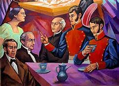
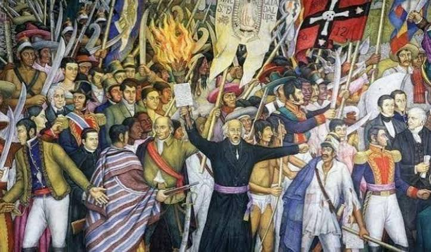
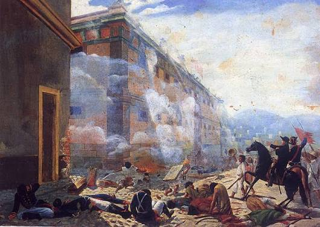
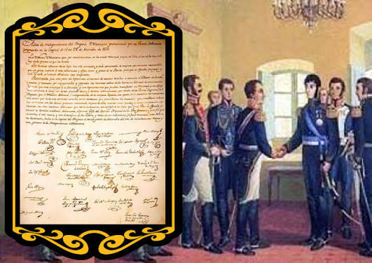

Fechas Importantes
1810 - 15 Septiembre: Descubrimiento de la Conspiración
Josefa Ortiz de Domínguez logra avisar a Ignacio Allende y Miguel Hidalgo que la conspiración en Querétaro fue descubierta, forzando la acción inmediata.

1810 - 16 Septiembre: El Grito de Dolores
Miguel Hidalgo convoca al pueblo a levantarse en armas en Dolores, Guanajuato, iniciando formalmente la Guerra de Independencia.

1810 - 21 Septiembre: Toma de Celaya
Primera gran plaza capturada por las fuerzas insurgentes; Hidalgo es nombrado Capitán General del naciente ejército.

1810 - 28 Septiembre: Toma de la Alhóndiga de Granaditas
Primera gran batalla victoriosa en Guanajuato, recordada por la acción insurgente encabezada por Juan José de los Reyes Martínez, "El Pípila".

1821 - 27 Septiembre: Consumación de la Independencia
El Ejército Trigarante, al mando de Agustín de Iturbide y Vicente Guerrero, entra triunfal a la Ciudad de México tras 11 años de lucha.
1821 - 28 Septiembre: Firma del Acta de Independencia
Se redacta y firma el Acta de Independencia del Imperio Mexicano, estableciendo formalmente al Estado mexicano como una nación soberana.
